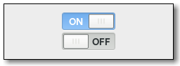

Gtk.Switch¶
Example¶

- Subclasses:
None
Methods¶
- Inherited:
Gtk.Widget (278), GObject.Object (37), Gtk.Buildable (10), Gtk.Actionable (5), Gtk.Activatable (6)
- Structs:
class |
|
|
|
|
|
|
|
|
Virtual Methods¶
- Inherited:
Gtk.Widget (82), GObject.Object (7), Gtk.Buildable (10), Gtk.Actionable (4), Gtk.Activatable (2)
|
|
|
Properties¶
- Inherited:
Name |
Type |
Flags |
Short Description |
|---|---|---|---|
r/w/en |
Whether the switch is on or off |
||
r/w/en |
The backend state |
Style Properties¶
- Inherited:
Name |
Type |
Default |
Flags |
Short Description |
|---|---|---|---|---|
|
|
d/r |
The minimum height of the handle |
|
|
|
d/r |
The minimum width of the handle |
Signals¶
- Inherited:
Name |
Short Description |
|---|---|
The |
|
The |
Fields¶
- Inherited:
Name |
Type |
Access |
Description |
|---|---|---|---|
parent_instance |
r |
Class Details¶
- class Gtk.Switch(**kwargs)¶
- Bases:
- Abstract:
No
- Structure:
Gtk.Switchis a widget that has two states: on or off. The user can control which state should be active by clicking the empty area, or by dragging the handle.Gtk.Switchcan also handle situations where the underlying state changes with a delay. SeeGtk.Switch::state-setfor details.- CSS nodes
switch ╰── slider
Gtk.Switchhas two css nodes, the main node with the name switch and a subnode named slider. Neither of them is using any style classes.- classmethod new()[source]¶
- Returns:
the newly created
Gtk.Switchinstance- Return type:
Creates a new
Gtk.Switchwidget.New in version 3.0.
- get_active()[source]¶
- Returns:
Trueif theGtk.Switchis active, andFalseotherwise- Return type:
Gets whether the
Gtk.Switchis in its “on” or “off” state.New in version 3.0.
- get_state()[source]¶
- Returns:
the underlying state
- Return type:
Gets the underlying state of the
Gtk.Switch.New in version 3.14.
- set_state(state)[source]¶
- Parameters:
state (
bool) – the new state
Sets the underlying state of the
Gtk.Switch.Normally, this is the same as
Gtk.Switch:active, unless the switch is set up for delayed state changes. This function is typically called from aGtk.Switch::state-setsignal handler.See
Gtk.Switch::state-setfor details.New in version 3.14.
- do_activate() virtual¶
An action signal and emitting it causes the switch to animate.
- do_state_set(state) virtual¶
-
Class handler for the
::state-setsignal.
Signal Details¶
- Gtk.Switch.signals.activate(switch)¶
- Signal Name:
activate- Flags:
- Parameters:
switch (
Gtk.Switch) – The object which received the signal
The
::activatesignal onGtk.Switchis an action signal and emitting it causes the switch to animate. Applications should never connect to this signal, but use the notify::active signal.
- Gtk.Switch.signals.state_set(switch, state)¶
- Signal Name:
state-set- Flags:
- Parameters:
switch (
Gtk.Switch) – The object which received the signalstate (
bool) – the new state of the switch
- Returns:
Trueto stop the signal emission- Return type:
The
::state-setsignal onGtk.Switchis emitted to change the underlying state. It is emitted when the user changes the switch position. The default handler keeps the state in sync with theGtk.Switch:activeproperty.To implement delayed state change, applications can connect to this signal, initiate the change of the underlying state, and call
Gtk.Switch.set_state() when the underlying state change is complete. The signal handler should returnTrueto prevent the default handler from running.Visually, the underlying state is represented by the trough color of the switch, while the
Gtk.Switch:activeproperty is represented by the position of the switch.New in version 3.14.
Property Details¶
- Gtk.Switch.props.active¶
- Name:
active- Type:
- Default Value:
- Flags:
Whether the
Gtk.Switchwidget is in its on or off state.
- Gtk.Switch.props.state¶
- Name:
state- Type:
- Default Value:
- Flags:
The backend state that is controlled by the switch. See
Gtk.Switch::state-setfor details.New in version 3.14.